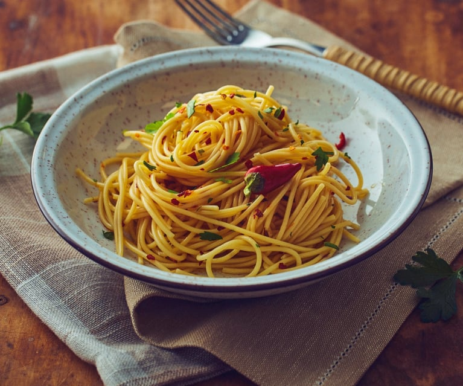

Spaghetti Aglio e Olio

Description
This is an italian classic and the perfect recipe for lazy evenings where you still don't want to miss up on a delicious dinner. As the name indicates are the main ingredients spaghetti, oil and garlic and therefore always available, even if your kitchen is filled sparse on a particular day.
Ingredients
For 1 serving
- 150g spaghetti
- olive oil
- 3 cloves of garlic
- 1 dried pepperoncino
- parmesan cheese
- parsley
- salt and pepper
Steps
- Slice up the garlic and the pepperoncino into slices
- Cook the pasta al dente. While the pasta is off cooking:
- Put around 2 tablespoons of olive oil into a pan at medium heat. Add the garlic and the pepperoncino and fry them until the garlic turns brown.
- When the pasta is ready let it drain and add it to the pan with the garlic. You can add 2 more tablespoons of oil, salt and pepper.
- Grate the parmesan and chop up the parsley and add them on top when serving